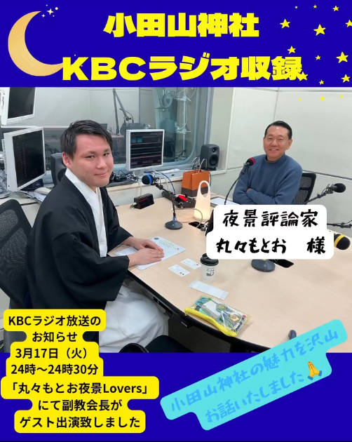

新着情報
-
2026.03.17

九州朝日放送本社にてKBCラジオ「丸々もとお 夜景lovers」に
小田山神社副教会長がゲストとして出演させていただきました‼ -
2026.02.20
 JR九州 特別 九州御朱印巡り に当社も参加致しました‼
JR九州 特別 九州御朱印巡り に当社も参加致しました‼
-
2026.08.24
 『九州御朱印巡り』様に当社を取り上げて頂きました‼
『九州御朱印巡り』様に当社を取り上げて頂きました‼
行事や季節の境内の様子、期間限定の御朱印については
公式Instagramにてご紹介しております。


年中行事
四季折々の祭事に、不定期ではございますがイベントを開催しております。
過去に開催したイベント
| 2026.02.03 | 節分・星祭り（限定御朱印頒布） |
| 2026.01.15 | どんど焼き |
| 2025.10.18 | 秋季大祭・七五三マルシェ（限定御朱印頒布） |
| 2025.10.06 | 中秋の名月「はにわ」御朱印頒布 |
| 2025.09.12 | ベビーマッサージ＆はいはいコンテスト |
| 2025.08.22 | 水あそび大会 |
| 2025.07.18 | 浴衣着付け体験＆撮影会 |
| 2025.06.30 | 夏越大祓式 |
| 2025.06.20 | なごみマルシェ・神社de写経 |
| 不定期 | コスプレイベント等も開催しております |